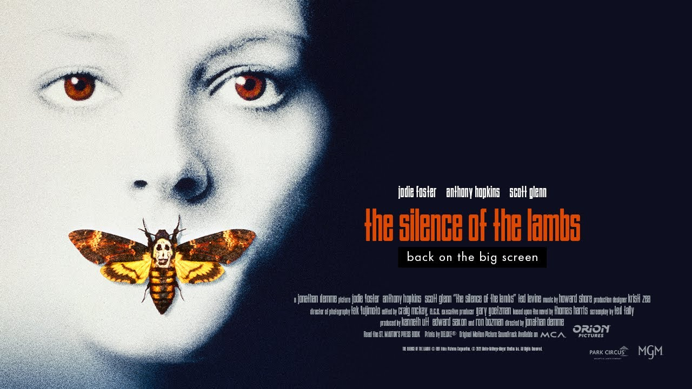
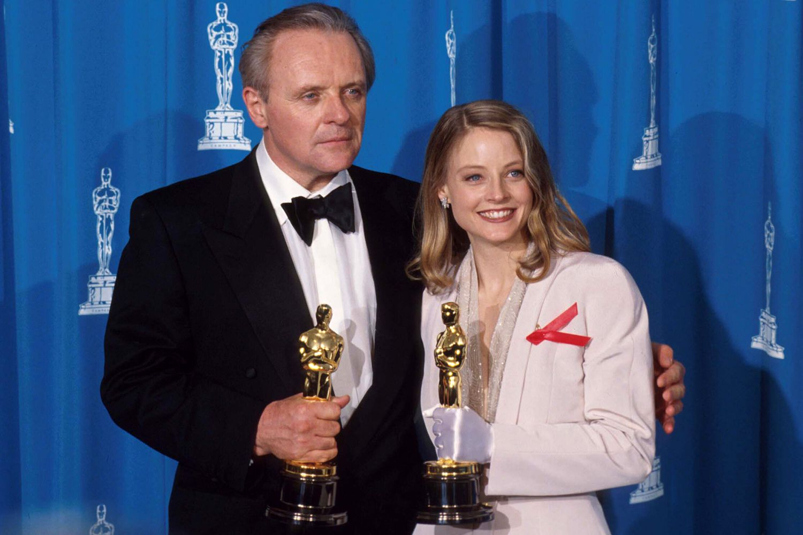

Fiche technique — Le Silence des Agneaux
Informations générales
- Titre original : The Silence of the Lambs
- Titre français : Le Silence des Agneaux
- Année de sortie : 1991
- Durée : 1h58

- Genre : Thriller psychologique / Policier
- Pays d’origine : États-Unis
- Langue originale : Anglais
Réalisation et production
- Réalisateur : Jonathan Demme
- Scénario : Ted Tally
- D’après le roman de : Thomas Harris (1988)
- Producteur : Edward Saxon
- Musique : Howard Shore
- Photographie : Tak Fujimoto
- Montage : Craig McKay

Récompenses
- 5 Oscars :
- Meilleur film
- Meilleur réalisateur
- Meilleur acteur (Anthony Hopkins)
- Meilleure actrice (Jodie Foster)
- Meilleur scénario adapté